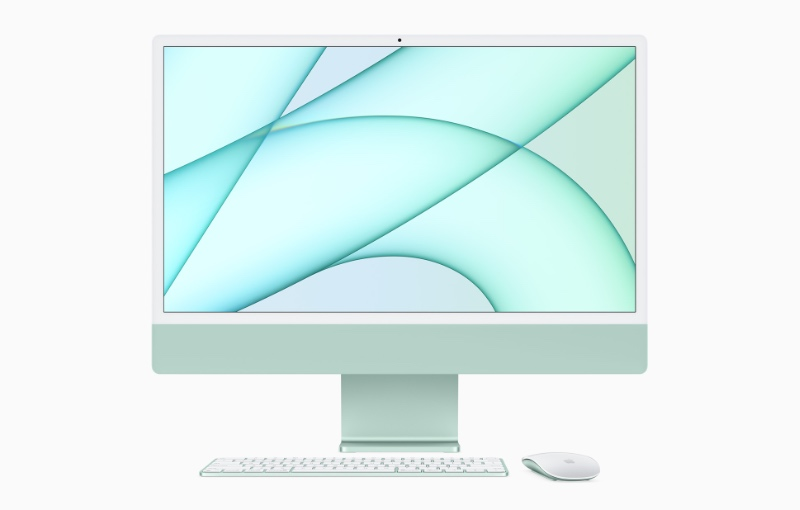
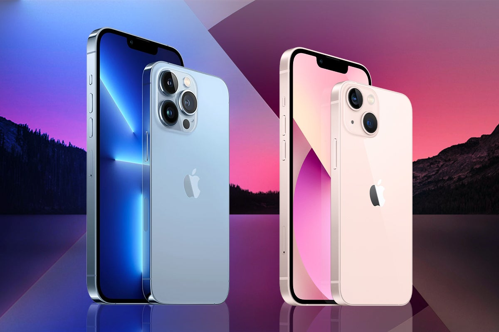

Mobile

This is the new iMac for the year of 2021.
In terms of photo and video editing performance, the new iMac is on par with every other M1 Mac, meaning: excellent. And Apple has combined that performance with a color-accurate 4.5K Retina display and crammed it all inside an impossibly thin and playfully designed package. Apple has combined M1 performance with a color-accurate 4.5K Retina display and crammed it all inside an impossibly thin and playfully designed package. Like very other M1 Mac, it has its frustrating limitations – some of Apple's design choices have left professionals scratching their heads. But if you view the new 24-inch iMac through the lens of Apple's intentions for this product, the creative potential of this machine comes into focus and you begin to understand who should (and who shouldn't) buy this new machine.
This is the brand new iPhone for Apple enthusiasts
The iPhone 13 and 13 Mini received a number of significant upgrades including new cameras, a bigger battery, more storage and a brighter screen. The iPhone 13 is a delightful upgrade to last year's already wonderful iPhone 12 family. Some will be disappointed because it's not radically different from previous models, but that's actually part of the charm. Familiarity has been one of the keys to Apple's success with the iPhone, and the iPhone 13 and 13 Mini are those same reliable friends that seemingly never change.
This is the brand new iPad for Apple enthusiasts
If you’re looking to get an iPad right now and can afford it, the new $599 iPad Air is the best tablet for most people. Apple has taken the design from the more expensive iPad Pro and brought it down to a more reasonable price point. It’s $100 more than it was last year, but in return this year’s iPad Air has a bigger, better screen and a faster (and very intriguing) processor.